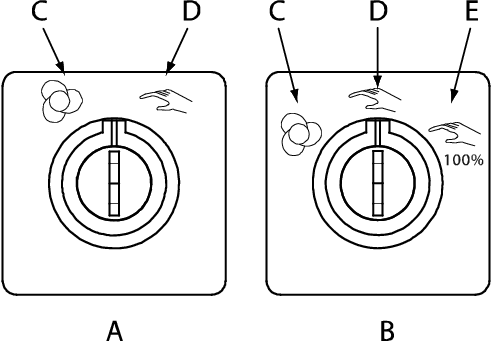

检查控制器模式开关的位置或FlexPendant 的状态栏。
操作模式的更改也会记录在事件日志中。
模式开关的位置如下图：

A
双位置模式开关
B
三位置模式开关
C
自动模式
D
手动减速模式
E
全速手动模式
操作
Information
1
从手动模式切换到自动模式
详情请参阅 从手动模式切换到自动模式 。
2
从自动模式切换到手动模式
详情请参阅 从自动模式切换到手动模式 。
您可以在FlexPendant 的状态栏上查看当前操作模式。状态栏示例如下：
操作员窗口
操作模式
活动系统
控制器状态
程序状态
F
机械单元，活动状态突出显示
关于自动模式
关于手动模式